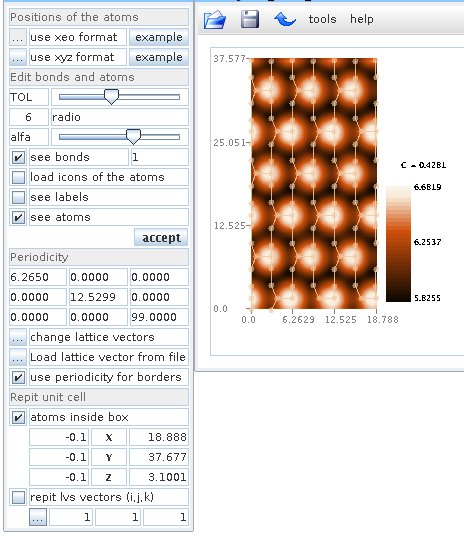

java_STM_AFM
A Java program to paint the experimental and theoretical data obtained of STM and AFM.
By Daniel González Trabada
Table of contents
- Run java_STM_AFM
- Open a file
- Open more files
- Show a directios
- Insert atoms
Run java_STM_AFM
java -jar java_STM_AFM.jar
Open a file
The program is ready to open files with more than 3 columns
you can select the column for the "x" "y" and "z" axis in this way
x[1] = is X for atom 1
.
.
x[i] = is X for atom i
y[i] = is Y for atom i
z[i] = is Z for atom i
Show a direction
Open more files
tool -> Open more files
The progran represent the added files with the same parameters thant the original:
Insert atoms
We can use xeo format or xyz format. You can load the lattice vectors from a file,
and the repeat the atoms inside a box, also you can use a multiple of lvs vectors.

TOL = tolerance of the bonds
Radio = radio of the atoms
alfa = transparent
load icons of the atoms = take the pictures of the folder "iconos", you can use as icon what ever you want
More examples: